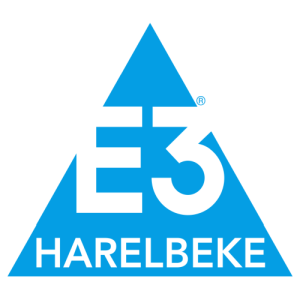

Verslag
Van a1, van a2, van a E3 saxo bank classic. Het peloton had er zin in in Harelbeke. Alleen Fabio Jakobsen moest er al vroeg de brui aan geven. Water viel er niet uit de lucht maar het regende vooral aanvallen in het begin. Lambrecht, Tronchon en Zukowsky zijn drie musketiers die zich weten los te maken. Voor de drie blijft het strijden om wat seconden voorsprong te hebben. Na de Paddestraat zien Dewulf, Durbridge en Buystrom hun kans om de sprong naar voor te wagen. Van Drie naar 6 met 30 seconden voorsprong.
Twee renners van Picnic post NL Renard, Flynn en een Brugos kminek willen zich nog bij de 6 voegen, maar volgen op 1minuut. Het peloton volgt op 3 en een halve minuut van de kop van de koers. Het zijn de mannen van Alpecin die de dans in het peloton leiden.
Deze situatie in de koers blijft lange tijd gelijk. Het blijft wachten tot de E3 col voor de lont aan het kruitvat wordt gestoken door Kielich. Hoole Theuns, Turgis, Swift, Planckaert en Reinderink weten hun wagonnetje aan te haken. Al snel vallen ze de drie achtervolgers op de nek. Van Tricht wil de achtervolging inzetten maar valt in een bocht in aanloop van de Kwaremont. Het zijn de mannen van UAE die de achtervolging leiden. Tratnik en Honoré wagen een nieuwe poging om de sprong naar de ontsnapten te wagen. Bij de achtervolgende groep moeten de 2 mannen van Pic Nic en de man van Burgos op de top van de oude Kwaremont hun nieuwe metgezellen laten lopen. Deze achtervolgende groep volgt op twee en een halve minuut, het peloton op 3 minuten van de kop van de koers.
In de aanloop naar de Kortekeer heeft Florian Vermeersch te kampen met materiaalpech, hij moet wachten op een nieuwe fiets van de volgwagen. Het zal moeilijk worden om nog een rol van betekenis te spelen in het verhaal van de koers. Op de Kortekeer weet hij zich wel weer in de staart van het peloton vast te bijten. Garcia Cortina versnelt op de Kortekeer, hij anticipeert zo op de Taaienberg.
De Taaienberg wordt door het peloton aangevat op een lang lint. Stuyven voert de forcing. Tim Van Dijke neemt over, VDP volgt, de twee vliegen over Garcia Cortina en hebben een gat op Laporte, Stuyven, Del Grosso en Trentin er lijkt echter weinig animo om te achtervolgen.
De twee Nederlanders komen al snel bij de 7 achtervolgers. Ze volgen op anderhalve minuut van de kop van de koers. Planckaert zet zich op kop voor zijn kopman. Het peloton volgt op een halve minuut van de achtervolgende groep.
VDP maakt Bonje op de Boigneberg, hij schudt zijn metgezellen uit het wiel. Hij gaat alleen op zoek naar de koplopers.
Op de Eikenberg brengt Abrahamsen toch vaart in het peloton. Alles blijft nog mogelijk. VDP volgt op 40 seconden van de kopgroep, de voorwacht van het peloton volgt op anderhalve minuut van de kop van de koers. Stuyven, Pithie, Vermeersch komen bij de eerste groep achtervolgers. Ze brengen een klein peloton mee.
We vatten de Kapelberg aan. VDP komt net voor de top bij de 6 koplopers. Het peloton volgt op 1 minuut.
VDP bepaalt de snelheid in de kop van de koers. De vroege vluchters proberen op de bagagedrager mee te gaan? De Paterberg wenkt. Dewulf kan als enige mee in het wiel van VDP. Maar voor de top van de Pater moet ook hij de vliegende Hollander laten gaan. Nog 40km te gaan en het is 1 tegen allen.
In het peloton versnelt Morgado op de Oude Kwaremont, Bystrom haakt aan. De kop van het peloton volgt nog steeds op 1 minuut. Het is hollen en stilstaan in het peloton. Op de top van de E3 col rijden Abrahamsen, Florian Vermeersch en Hagenes weg uit het peloton. Ze komen bij Dewulf. Ze volgen op 1 minuut van TGV VDP.
Op de top van de Tiegemberg hebben de 4 achtervolgers nog 40 seconden achterstand. Alle hellingen zijn opgesoupeerd. nog 20km tot aan de meet. Het peloton volgt op 1 minuut.
Zowel bij de 4 achtervolgers als in het peloton wordt hard gereden. op 10km is de voorsprong geslonken tot 25 en 50 seconden.
In de laatste 10km worden heel wat tanden en nagels kapotgebeten, het gaat hard tegen hard. Nog 5km te gaan, de 4 op 10seconden, het peloton op 30seconden. De 4 vallen onder de vod net niet op de nek van VDP. Door de koppigheid van enkele achtervolgers weet VDP hen net voor te blijven, Hagenes wint het sprintje van de vier voor Florian Vermeersch.
In megabike is de dagzege voor Jeroen Belien (oudorganisator van megabike), hij wint ruim voor Cas Leirens en Kurt Deneir (Forza Mandel).
De tussenstand ziet er weer lichtjes anders uit Daan Van Breedam (Bluvn Doan) blijft op kop met een mooie voorsprong op Lene Jacobs, Liesbeth Christiaens komt nu op plek 3. Daarachter komt Jeroen Belien opzetten op de 4de plek en plek 5 is voor de winnaar van 2 dagen geleden Arnout Verkaemer.
Uitslagen, Tussenstand & optimale ploeg kan je vinden onder het verslag op de website: https://jolly-bohr-326994.netlify.app/
Wil je nog meer statistieken dan kan je verder zoeken via het menu statistieken.
Sportieve groeten,
Arnout, Stijn & Fred